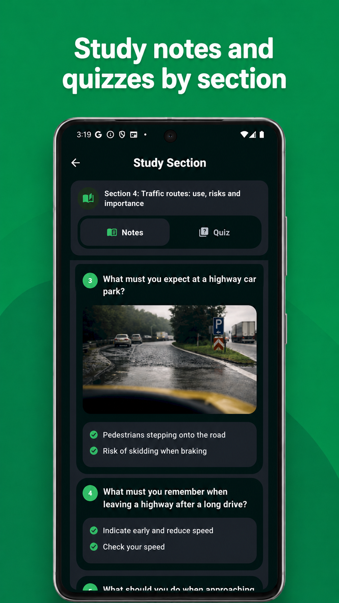

State and territory choice
Learn with your local requirements in mind.
Prepare for your Australian learner driver knowledge test with a region-focused study experience. Explore the rules relevant to your state or territory, then practise with purpose.
Make every study session purposeful with a simple experience designed for learner drivers.
Learn with your local requirements in mind.
Build knowledge in manageable practice sessions.
Focus on the questions and topics that need another look.
Road rules and learner-test details vary across Australia. Choose the region you are preparing for in the app, and use the official state or territory handbook to confirm current rules.
Australia has separate state and territory licensing authorities. Always check the latest handbook and test requirements from the relevant authority.
A preview of the shared design approach across our driving licence learning apps.
Temporary visual preview: The images below are from DriveBW (Botswana), not DriveAUS. They are design references only and will be replaced with Australia-specific screenshots.




DriveAUS is an independent educational project, not an official government website or licensing authority. The legal pages below are drafts pending verification against the app's actual implementation.
How learning data and third-party services may be handled, and how to contact us.
Read privacy policyGuidelines for use, educational limitations, and any future paid features.
Read termsOptions for clearing local app data and requesting assistance with personal information.
Data deletionFor availability or support enquiries, contact the development team. Official app-store links will be added after listings are verified.
Contact support